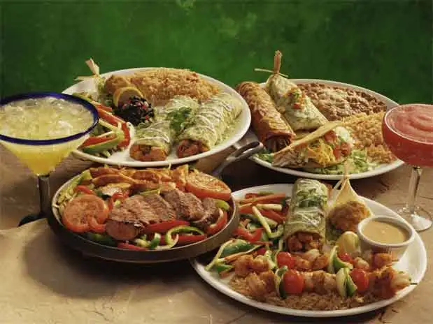
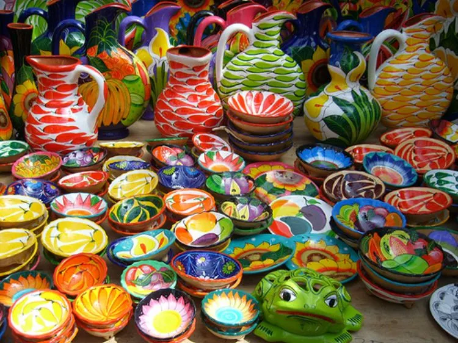

La rica gastronomía sinaloense se basa en los productos del mar, pues la variada pesca que le proporciona su amplio litoral permite que la creatividad humana se desborde con la invención de deliciosos platillos, entre los que se incluyen ingredientes elementales como los camarones, el pescado, los callos de hacha y la carne de malin, entre otros, que igual se sirven en forma de machaca.

*Cestería y alfarería.
*Muebles de madera y artículos ornamentales de cerámica.
*Talabartería.
*Cerámica, talabartería y tejidos de palma.
*Tejidos de palma, cestería, tejidos de lana, madera, alfarería.
*Alfarería, madera tallada y tejidos de palma.

Notas relevantes:
El territorio de Sinaloa está integrado por un extenso litoral, valles regados por
caudalosos ríos, zonas semidesérticas y zonas boscosas de la Sierra Madre. En el norte del estado se asienta el
grupo mayo, el cual conserva muchas costumbres seculares y una recia cultura.
Algunos investigadores sostienen que el nombre de Sinaloa es una deformación del vocablo mayo sinajoa, que
quiere decir “lugar o casa de la sina”, nombre indígena de una cactácea que prolifera en la región.